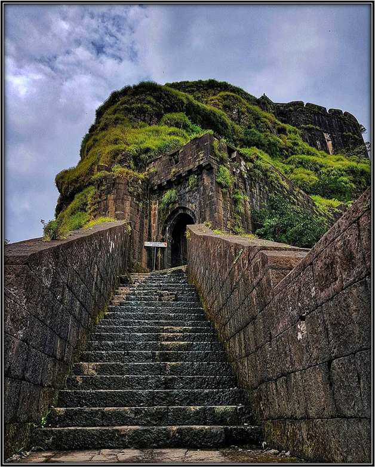
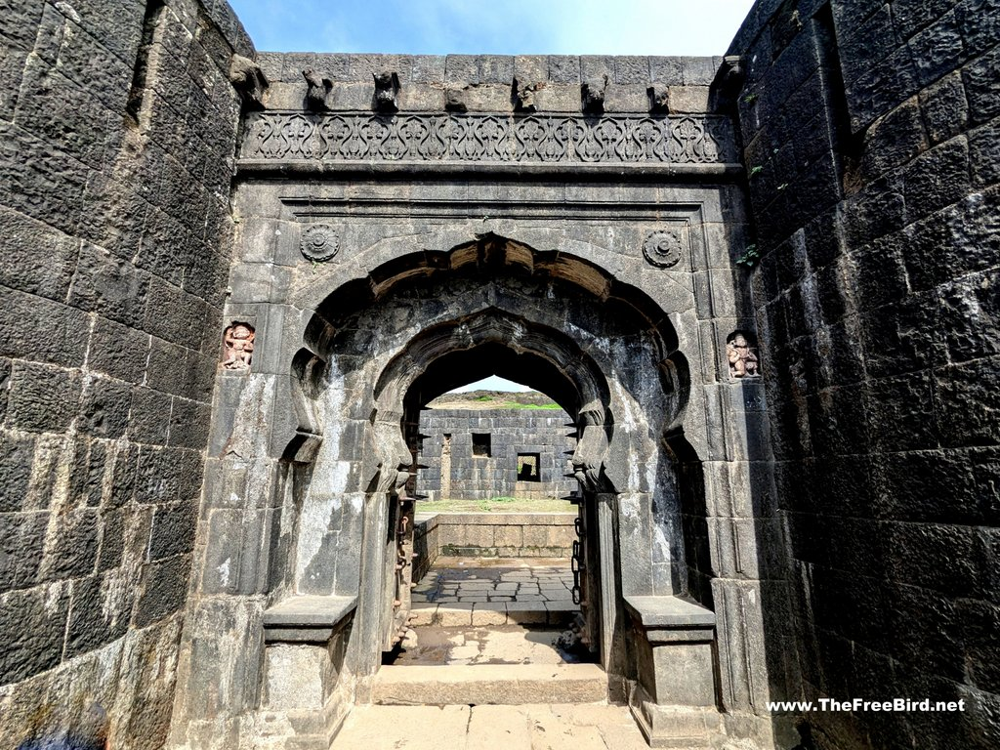
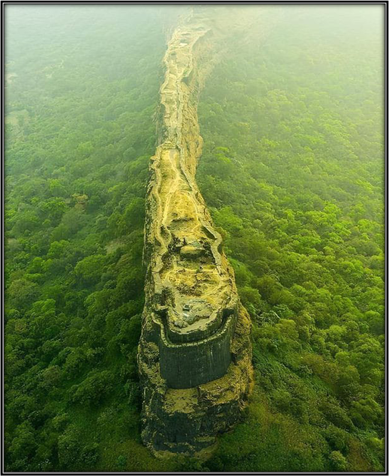

लोहगडावर आपले स्वागत आहे......
प्राचीन किल्ल्याचा समृद्ध इतिहास आणि वास्तुकला अनुभवा......

गडावरील ऐतिहासिक वास्तू

गणेश दरवाजा
ह्याच्याच डाव्या – उजव्या बुरुजाखाली सावळे कुटुंबाचा नरबळी देण्यात आला होता आणि त्याच्या बदल्यात त्यांच्या वंशजांना लोहगडवाडीची पाटीलकी देण्यात आली होती. येथे आतील बाजूस शिलालेख आहेत.

शौचालय व चोरवाट
पूर्वीच्या काळात देखील सैनिकांसाठी शौचालय होते. चोरवाटेची रचना ही अशी आहे की पाहिल्यावर ते शौचालय आसल्याचा भास होतो.
महादरवाजा
हा गडाचा मुख्य दरवाजा आहे.

नारायण दरवाजा
हा दरवाजा नाना फडणवीसांनी बांधला. येथे एक धान्य कोठार आहे, जिथे भात व नाचणी साठवून ठेवण्यात येई.
हनुमान दरवाजा
हा सर्वात प्राचीन दरवाजा आहे. ह्या दरवाज्याच्या दोन्ही बाजूला हनुमान रायचे शिल्प आढळते.

कबर , सदर , घोड्यांची पागा
ह्या गडावरील काही वास्तु आढळतात.

लक्ष्मी कोठी
पहिल्या सुरत लुटीच्या वेळेस आणलेली संपत्ती नेताजी पालकरने लोहगडावर आणून ठेवली होती
विंचू कडा
कड्याचा आकार विंचवाच्या नांगी सारखी दिसतो. म्हणून यांस विंचूकाटा म्हणतात

शिवमंदिर
हे मंदिर भगवान शिवाला समर्पित आहे. ह्या मंदिराच्या शेजीरी मागील बाजूस त्र्यंबक नावाचे असटकोणी तलाव आहे.

सोळाकोणी तलाव
ह्या तलावाचे वैशिष्ट्य म्हणजे ह्याला सोळा कोणी रचना आढळते. व या तलावाची बांधणी नाना फडणविसणी केली असे शिळलेखामद्धे नमूद आहे.
गडाचा इतिहास
इ.स.पू. 2000 पूर्वी बांधला गेला: लोहगड गड अतिशय मजबूत आणि भव्य आहे. भाजे आणि बेडसे लेणी निर्माण झाल्या त्याही पूर्वी, म्हणजेच इ.स.पू. 2000 वर्षांपूर्वी या किल्ल्याची निर्मिती झाली असावी असे अनुमान आहे.